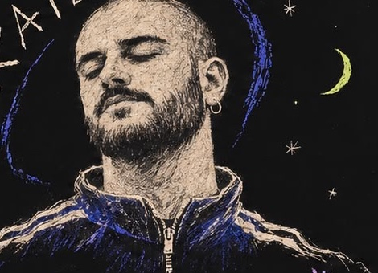
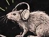

cosas que no sé decir
A veces todo se queda en la punta de la lengua. Palabras que giran, que no encuentran forma, que prefieren el silencio.
borradores01 / el mapa
canciones, textos y otras criaturas
toca para explorar ↓


A veces todo se queda en la punta de la lengua. Palabras que giran, que no encuentran forma, que prefieren el silencio.
borradoresnotas
ideas
letras
recuerdos
hay canciones
que empiezan
donde no llego.